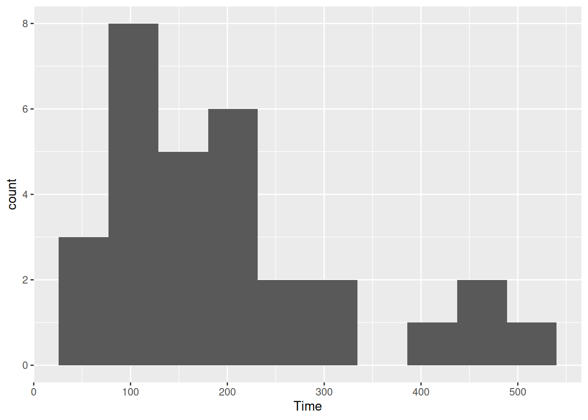

Recall IRS data (used as a motivation for the sign test) :
ggplot(irs, aes(x=Time))+geom_histogram(bins=10)

\(t\) procedure for the mean would not be a good idea because the distribution is skewed.
What actually matters
It’s not the distribution of the data that has to be approx normal (for a \(t\) procedure).
What matters is the sampling distribution of the sample mean.
If the sample size is large enough, the sampling distribution will be normal enough even if the data distribution is not.
This is why we had to consider the sample size as well as the shape.
But how do we know whether this is the case or not? We only have one sample.
The (nonparametric) bootstrap
Typically, our sample will be reasonably representative of the population.
Idea: pretend the sample is the population, and sample from it with replacement.
Calculate test statistic, and repeat many times.
This gives an idea of how our statistic might vary in repeated samples: that is, its sampling distribution.
Called the bootstrap distribution of the test statistic.
If the bootstrap distribution is approx normal, infer that the true sampling distribution also approx normal, therefore inference about the mean such as \(t\) is good enough.
If not, we should be more careful.
Why it works
We typically estimate population parameters by using the corresponding sample thing: eg. estimate population mean using sample mean.
This called plug-in principle.
The fraction of sample values less than a value \(x\) called the empirical distribution function (as a function of \(x\)).
By plug-in principle, the empirical distribution function is an estimate of the population CDF.
In this sense, the sample is an estimate of the population, and so sampling from it is an estimate of sampling from the population.
Bootstrapping the IRS data
Sampling with replacement is done like this (the default sample size is as long as the original data):
boot <-sample(irs$Time, replace=T)mean(boot)
[1] 216.2
That’s one bootstrapped mean. We need a whole bunch.
# A tibble: 27 × 4
case scrap speed line
<dbl> <dbl> <dbl> <chr>
1 1 218 100 a
2 2 248 125 a
3 3 360 220 a
4 4 351 205 a
5 5 470 300 a
6 6 394 255 a
7 7 332 225 a
8 8 321 175 a
9 9 410 270 a
10 10 260 170 a
# ℹ 17 more rows
Pearson's product-moment correlation
data: speed and scrap
t = 15.829, df = 10, p-value = 2.083e-08
alternative hypothesis: true correlation is not equal to 0
95 percent confidence interval:
0.9302445 0.9947166
sample estimates:
cor
0.9806224
Bootstrapping a correlation 1/2
This illustrates a different technique: we need to keep the \(x\) and \(y\) values together.
Sample rows of the data frame rather than individual values of speed and scrap:
line_b %>%sample_frac(replace=TRUE)
# A tibble: 12 × 4
case scrap speed line
<dbl> <dbl> <dbl> <chr>
1 24 252 155 b
2 22 260 200 b
3 16 140 105 b
4 25 422 320 b
5 16 140 105 b
6 19 341 255 b
7 19 341 255 b
8 19 341 255 b
9 17 277 215 b
10 16 140 105 b
11 20 215 175 b
12 18 384 270 b
The bootstrap percentile interval doesn’t go down far enough.
The BCA interval seems to do a better job in capturing the skewness of the distribution.
The ordinary confidence interval for the correlation is very similar to the BCA one, and thus seems to be trustworthy here even though the correlation has a very skewed distribution. (cor.test uses the Fisher \(z\) transformation which “spreads out” correlations close to 1).
The \(z\)-transformed bootstrapped correlations
cors %>%mutate(z =0.5*log((1+my_cor)/(1-my_cor))) %>%ggplot(aes(sample=z)) +stat_qq() +stat_qq_line()
Comments